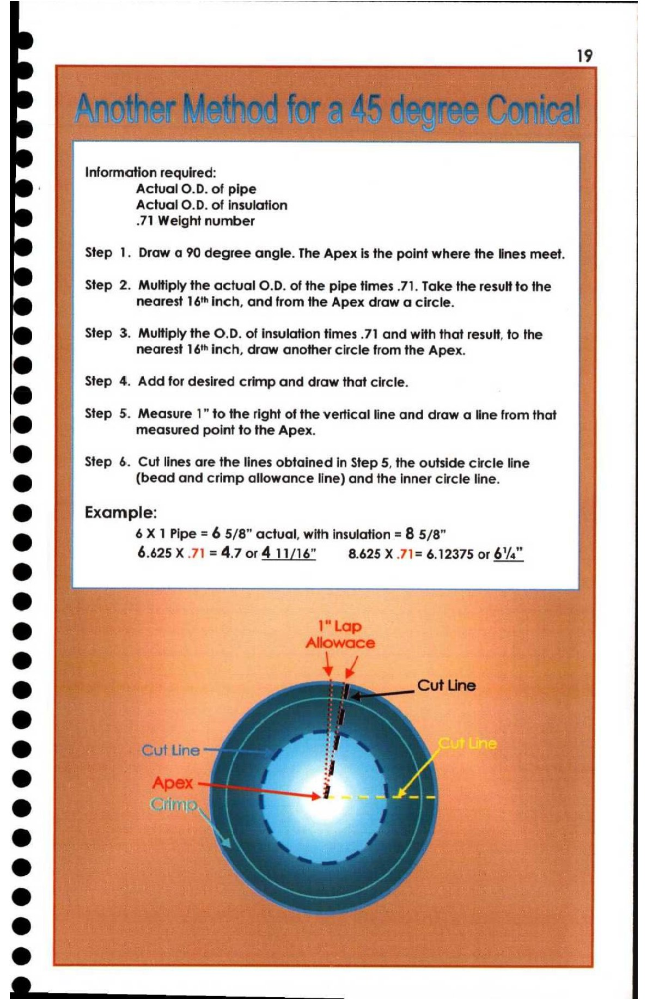

19. Another Method for a 45 Degree Conical

a 19
Another Mathod for’ 45 denrae Conical | —
| a rae |
; Information required:
‘ Actual O.D. of pipe
| Actual O.D. of insulation
-71 Weight number
Step 1. Draw a 90 degree angle. The Apex is the point where the lines meet. |
Step 2. Multiply the actual O.D. of the pipe times .71. Take the result to the
nearest 16'* inch, and from the Apex draw a circle.
Step 3. Multiply the O.D. of insulation times .71 and with that result, to the
e nearest 16'* inch, draw another circle from the Apex.
e Step 4. Add for desired crimp and draw that circle.
Step 5. Measure 1” to the right of the vertical line and draw a line from that
e@ measured point to the Apex.
* Step 6. Cut lines are the lines obtained in Step 5, the outside circle line
®& (bead and crimp allowance line) and the inner circle line.
@ Example:
e 6X 1 Pipe = 6 5/8” actual, with insulation = 8 5/8”
6.625 X .71 = 4.7 or 4 11/16" 8.625 X .71= 6.12375 or 61/4"
e Cut Line
e Cut Line :
® j
e Crimp,